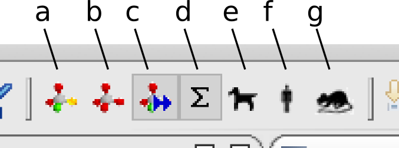

a) Calculate MetaPrint2D for the active compound/compounds
b) Remove MetaPrint2D coloring for the active compound/compounds
c) Toggle automatic MetaPrint2D calculation on changes in chemical structure
d) Choose MetaPrint2D database ALL
e) Choose MetaPrint2D database DOG
f) Choose MetaPrint2D database HUMAN
g) Choose MetaPrint2D database RAT
* ALL
* DOG
* HUMAN
* RAT
* Loose
* Standard
* Strict
In general the standard setting provides good balance. However, for molecules with a large number of common environments the strict setting may be employed, to provide greater discrimination between sites of metabolism, and for molecules with rare environments the loose setting may be used.